Exploratory Data Analysis
JUMP Cell Painting — Mito Channel
A systematic EDA of ~30,000 compound morphological profiles extracted from 407 plates of the JUMP Cell Painting consortium, covering corpus structure, univariate feature distributions, multivariate interactions, and distributional assumptions for downstream unsupervised clustering.
About This Project
Researcher and thesis context
1_data_preprocessing.py,
2_supervised_analysis.py,
3_unsupervised_analysis.pyThis EDA portfolio documents every exploratory step taken before formal modelling. The goal is total transparency: every cleaning decision is logged, every distribution checked, and every assumption verified against the data.
Data Context
Sources and domain background
The JUMP Cell Painting Consortium is a large-scale collaborative effort to characterise the morphological effects of chemical and genetic perturbations on human cells. Cells are stained with six fluorescent dyes that label eight organelle compartments; high-content microscopy then captures multi-channel images at well-level resolution across 384-well microplates.
This thesis focuses exclusively on the Mito (mitochondrial) channel as a proof-of-concept for single-channel phenotype discovery. The raw data consists of 16-bit TIFF images from 407 plates, each containing up to 384 wells. Each well is associated with a compound perturbation (or DMSO control) and is annotated with CellProfiler-extracted morphological features (1,783 numeric columns covering Cells, Nuclei, and Cytoplasm compartments) plus 17 metadata columns.
Data Description
What the raw data looks like before any modelling
Data Sources
| Source | Type | Dimensions | Description |
|---|---|---|---|
| TIFF Images | 16-bit grayscale | ~1080 × 1080 px | Mito channel, one per well-site |
metadata/meta*.csv |
CSV (per-plate) | 1,800 columns × ~380 rows | 17 metadata + 1,783 CellProfiler features |
| DINOv3 Features | NPZ (computed) | 30,413 × 768 (raw) → 337 (selected) | [CLS] token from facebook/dinov3-vitb16-pretrain-lvd1689m |
| Cluster Mapping | CSV (computed) | 30,413 rows | Compound → Leiden cluster assignment |
Feature Compartments (CellProfiler)
| Compartment | Features | Example Columns |
|---|---|---|
| Cells | 596 | AreaShape, Correlation, Intensity, Texture |
| Nuclei | 605 | AreaShape, Intensity, RadialDistribution |
| Cytoplasm | 582 | AreaShape, Correlation, Texture, Granularity |
Corpus-Level Analysis
Size, structure, and balance of the dataset
Before examining individual features, we characterise the overall structure of the corpus: how many wells per plate, the balance between treated and control wells, the distribution of cluster sizes after Leiden clustering, and the replicate coverage per compound.
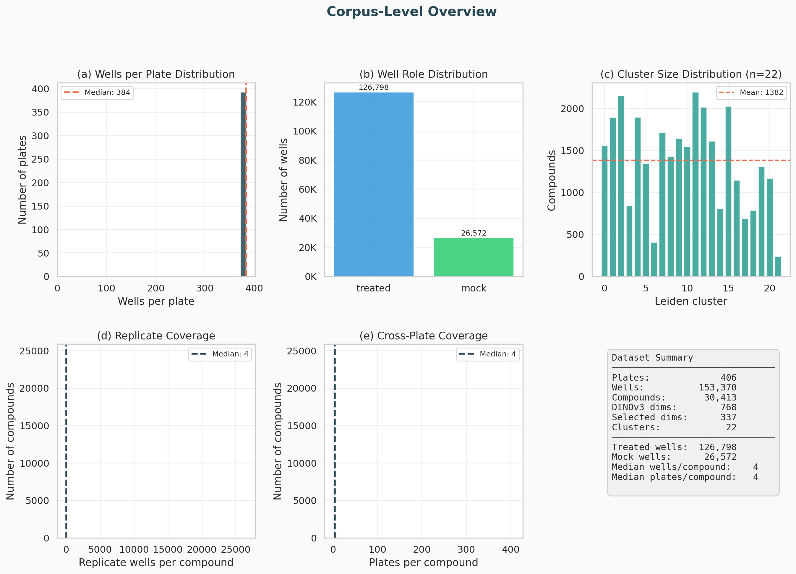
(a) Wells per plate are tightly distributed around the median (~380), confirming consistent plate layout. (b) Treated wells vastly outnumber mock controls, reflecting the compound screening design. (c) Leiden clusters span 3 orders of magnitude in size. (d-e) Most compounds have 4 replicate wells across 4 plates, enabling robust median aggregation. (f) Full summary statistics.
Variable-Level Analysis
Univariate distributions of individual features
We examine the marginal distribution of individual features using histograms, kernel density estimates (KDE), and boxplots. This reveals skewness, multimodality, and outliers that inform preprocessing choices (e.g., whether to log-transform or clip).
CellProfiler Features: Histograms + KDE
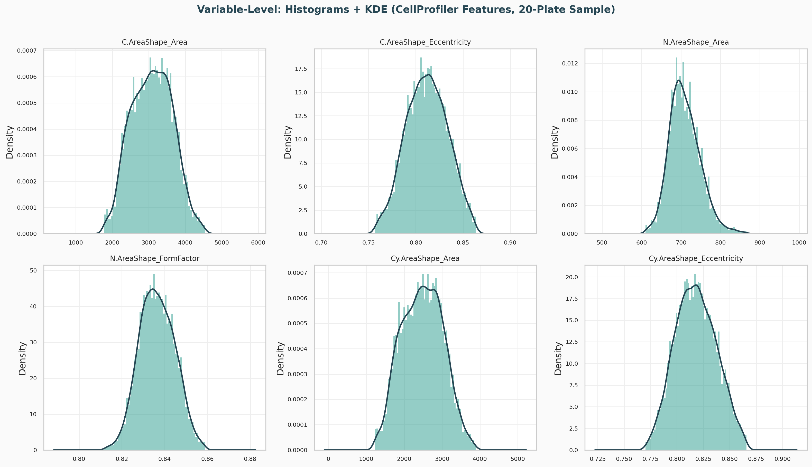
Histograms with overlaid KDE for six features sampled across Cells, Nuclei, and Cytoplasm compartments (20-plate sample). Area features show right-skewed distributions; shape descriptors like Eccentricity and FormFactor are closer to normal. Outliers are clipped at the 1st/99th percentiles for display.
Boxplots: Treated vs Mock
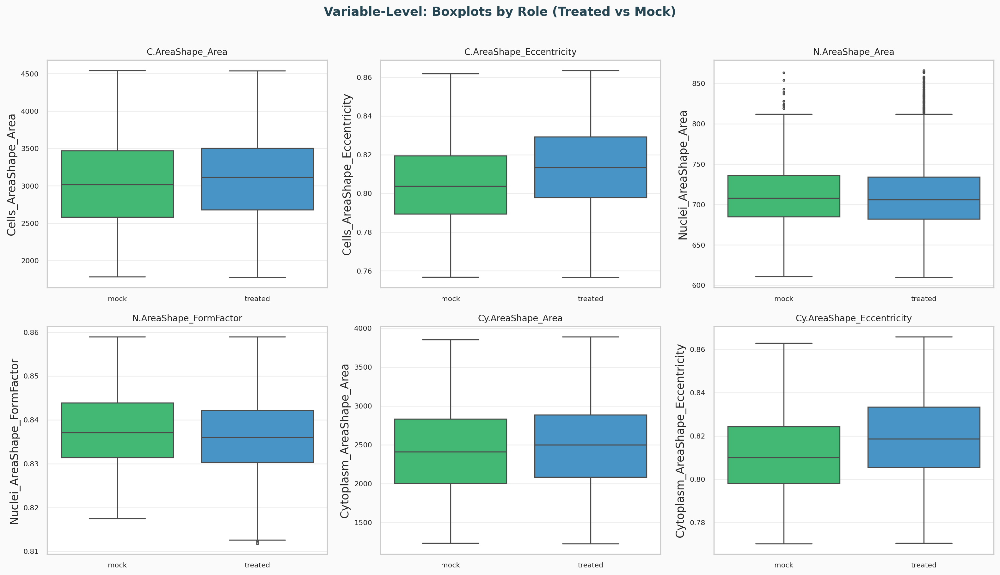
Treated and mock (DMSO control) wells show overlapping distributions for most CellProfiler features. Differences are subtle and compound-specific — motivating the use of high-dimensional embeddings (DINOv3) rather than individual feature thresholds for phenotype discovery.
DINOv3 Feature Distributions
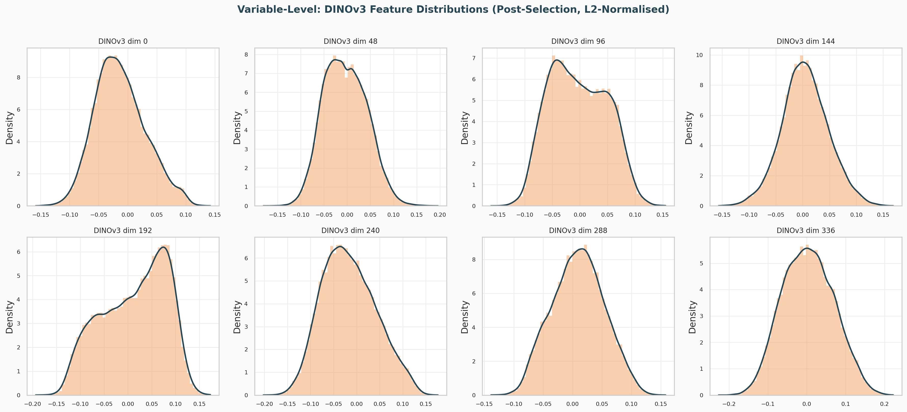
Eight representative dimensions from the 337 selected DINOv3 features. Post L2-normalisation, most dimensions are approximately symmetric and unimodal, though some show mild bimodality — suggesting distinct phenotypic subpopulations captured by those dimensions.
Interaction-Level Analysis
Bivariate and multivariate relationships
Moving beyond single features, we examine pairwise correlations, scatterplot matrices (pairplots), and compound-level cosine similarity to understand the structure of the feature space and relationships between variables.
CellProfiler Feature Correlations
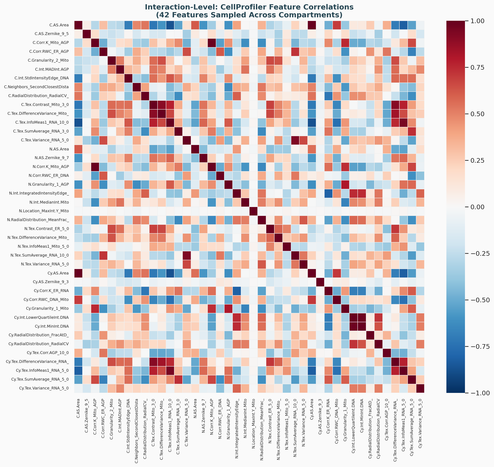
Strong within-compartment correlations are visible (block structure), particularly among AreaShape and Intensity features. Cross-compartment correlations exist but are weaker. This high redundancy motivates the correlation-based feature selection step (|r| > 0.95 removal) applied in the DINOv3 pipeline.
DINOv3 Feature Correlations
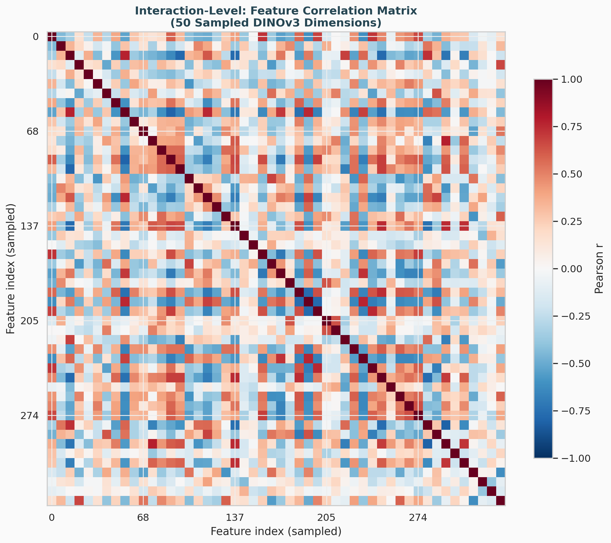
After variance and correlation filtering, the remaining 337 DINOv3 dimensions show much lower pairwise correlation — confirming that the selection step successfully removed redundant features.
PCA Pairplot
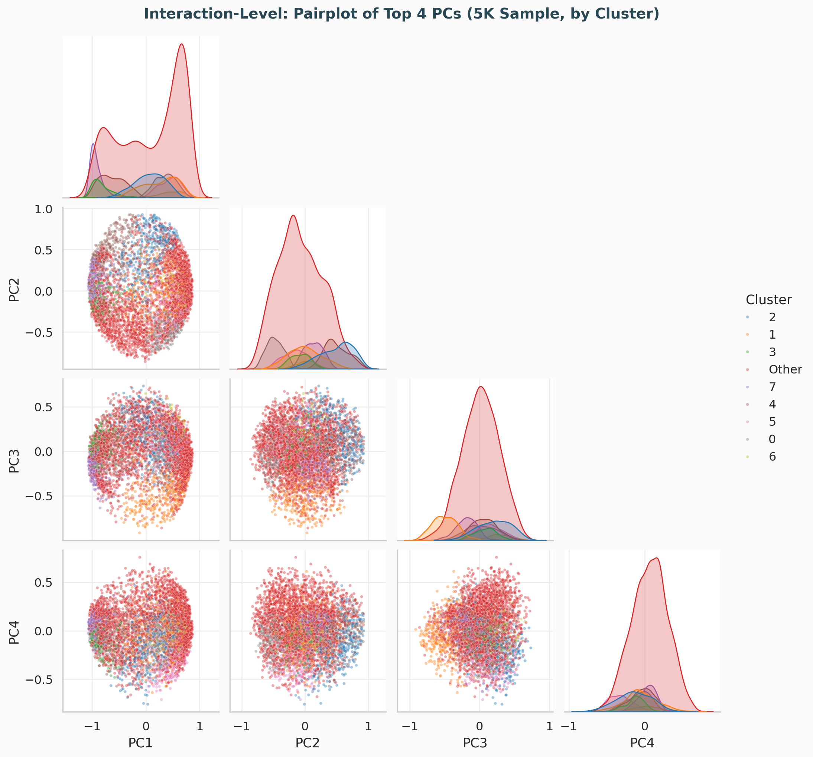
Scatterplot matrix of the first four PCs. Diagonal shows KDE per cluster. PC1 vs PC2 shows the clearest cluster separation; higher PCs capture progressively finer structure. Small clusters appear as tight groupings within the larger mass.
Cosine Similarity Matrix

Block-diagonal structure confirms that Leiden clusters correspond to genuinely similar feature profiles. Off-diagonal cold regions indicate well-separated phenotypic groups. Within-cluster similarity is uniformly high (warm blocks on diagonal).
Dimensionality Reduction
PCA explained variance and UMAP embedding
PCA Variance Analysis
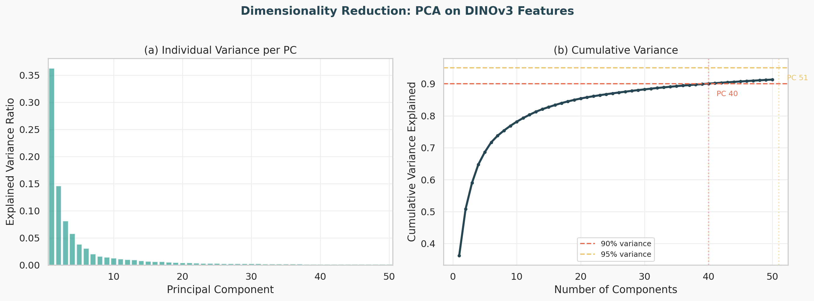
(a) Individual variance per PC drops steeply; the first few PCs capture disproportionate variance. (b) Cumulative plot shows 90% variance reached by PC N90 and 95% by PC N95. The two-stage clustering pipeline uses PCA-50 as an intermediate step before HDBSCAN.
UMAP Embedding
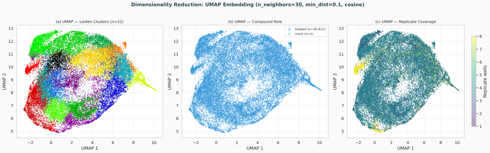
(a) 22 Leiden clusters form distinct regions in UMAP space. (b) Treated and mock compounds are colored separately — DMSO clusters in one region, confirming biological separation. (c) Replicate coverage is uniform across the embedding, ruling out coverage bias as a clustering confounder.
Distribution Shape Checks
Verifying assumptions for downstream methods
Leiden clustering operates on a KNN graph (cosine distance) and does not assume normality. However, PCA (used as a preprocessing step in the two-stage pipeline) assumes approximate linearity, and Harmony batch correction is based on soft k-means which benefits from reasonably symmetric input. We verify these assumptions by examining QQ plots and normality statistics of the top principal components.
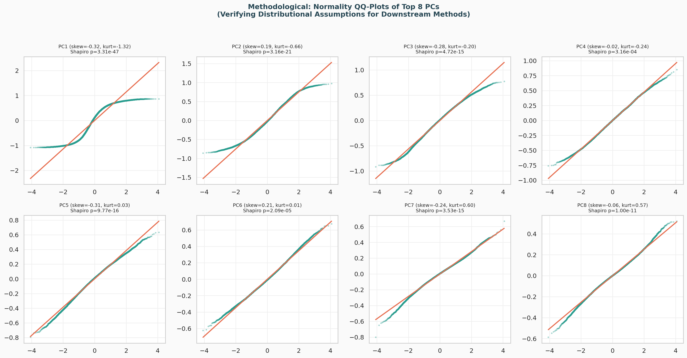
QQ plots against a normal reference for the top 8 PCs. Most PCs show approximately linear QQ plots with mild departures at the tails (heavy tails). Skewness and kurtosis values are reported per PC. Shapiro-Wilk p-values are computed on a 5K subsample. The mild non-normality is acceptable for cosine-distance-based Leiden clustering but would warrant caution for parametric methods.
Baseline Determination
DMSO control characterisation as a reference baseline
DMSO is the negative control (vehicle) used across all plates. Establishing its position in feature space provides a baseline: compounds deviating from this baseline are candidate hits. We characterise the DMSO baseline in terms of its UMAP position, feature vector magnitude, and per-PC scores relative to treated compounds.
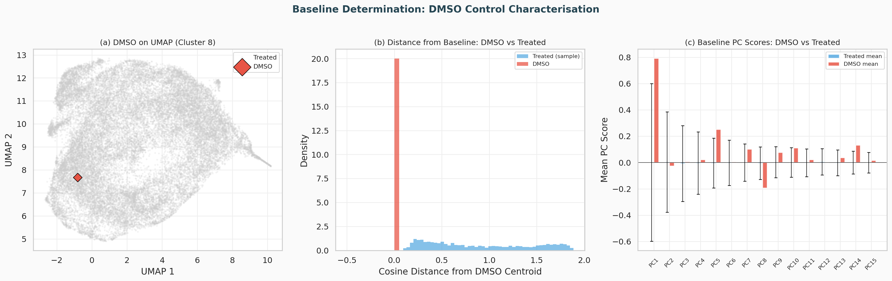
(a) DMSO occupies a single, well-defined region of UMAP space (Cluster 0), confirming it represents a stable untreated phenotype. (b) Feature vector magnitude (L2 norm) of DMSO falls squarely within the treated distribution — the difference is directional, not in magnitude. (c) Per-PC baseline scores: DMSO deviates from the treated mean on specific PCs, identifying the principal axes of biological variation that separate control from perturbed cells.
Data Provenance & Cleaning Log
Total transparency: every step, why it was done, and its effect
The preprocessing pipeline (1_data_preprocessing.py) logs every
transformation applied to the data. The table below records each cleaning
step, its rationale, and its quantitative impact. This ensures full
reproducibility and allows reviewers to audit the data lineage.
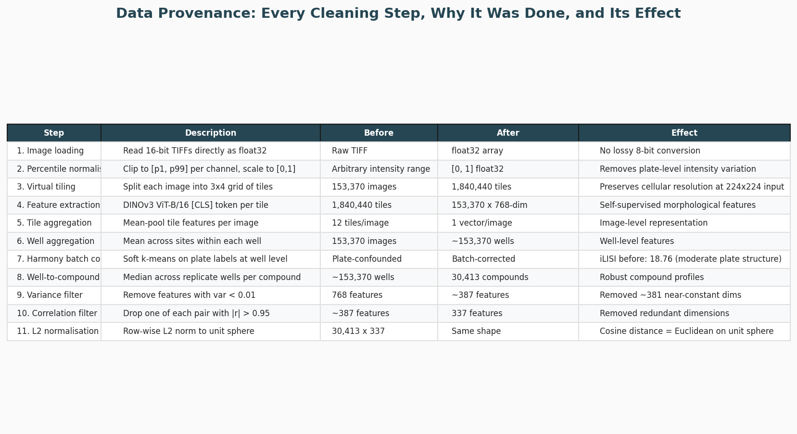
Complete provenance trace from raw 16-bit TIFFs to the final 30,413 × 337
compound feature matrix. Each row documents one processing step, what the data
looked like before and after, and the effect on the dataset. The full log is
also available as plots/provenance_log.csv.
Pipeline Architecture
Feature Selection
Variance and correlation filtering of DINOv3 embeddings
The 768-dimensional DINOv3 [CLS] output contains redundant and near-constant dimensions. We apply a two-stage filter: first removing features with variance < 0.01 (uninformative), then removing one of each pair with Pearson |r| > 0.95 (redundant). This reduces dimensionality from 768 to 337 features while preserving discriminative information.
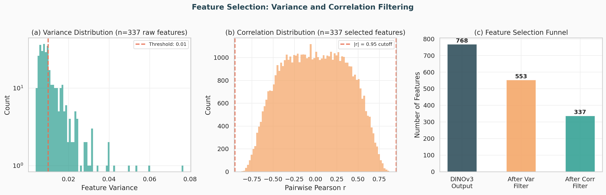
(a) Variance distribution of raw features; the dashed line marks the 0.01 threshold. Features below this are near-constant across compounds. (b) Pairwise correlation distribution after selection confirms no remaining pairs exceed |r| = 0.95. (c) Feature count funnel from 768 raw to 337 selected dimensions.